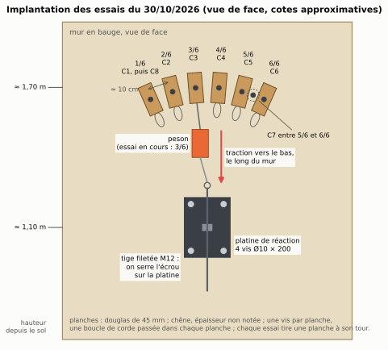
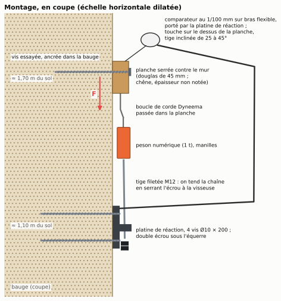
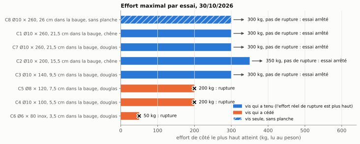
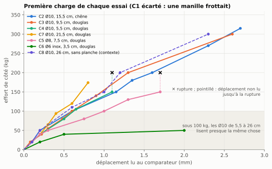
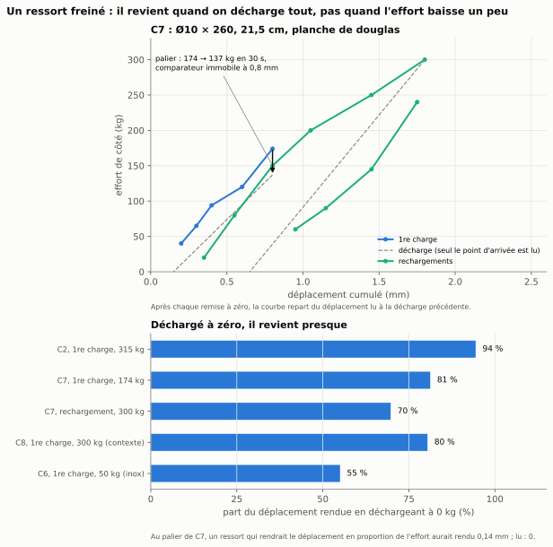
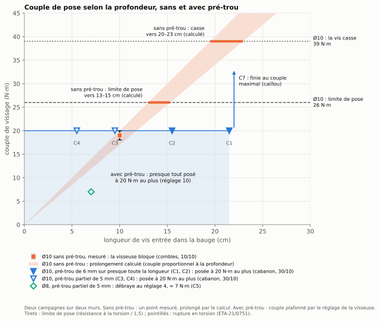
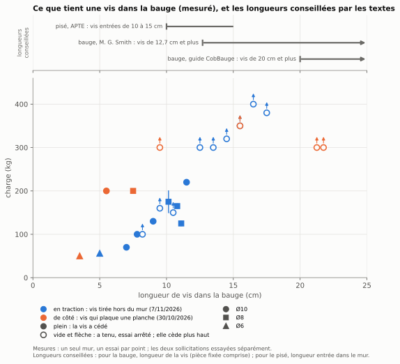
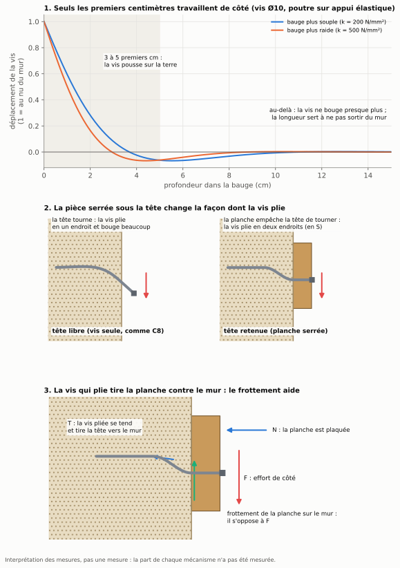
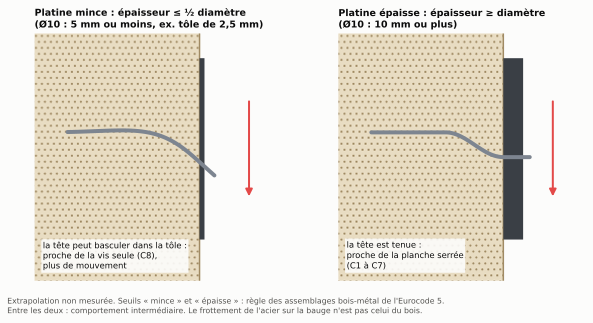

Données et code
Tout ce qui sert au papier est dans le dossier vis-dans-la-bauge/
du dépôt GitHub : les relevés bruts, le code qui refait les chiffres et
les figures, les photos. Texte, données, figures et photos sous licence
CC BY 4.0 ; code sous licence MIT.
Les données
donnees/releves_cisaillement_2026_10_30.csv: les relevés tels que notés pendant les essais, une ligne par lecture (effort au peson, déplacement au comparateur, remarques).donnees/releves_arrachement_2026_11_07.csv: les essais en traction, une ligne par charge (longueur dévissée, charge au peson, tenue ou rupture, ce qui a été vu).donnees/essais.csv: une ligne par essai, de côté et en traction (vis, ancrage, pièce serrée, pré-trou, issue, lectures écartées et pourquoi).donnees/vis.csvetdonnees/couple_pose.csv: caractéristiques des vis, couple de vissage noté à la pose.donnees/resultats_calcules.json: ce que les relevés donnent sans aucun modèle.- Dictionnaire des colonnes et statut de chaque lecture :
donnees/README.md.
Le code
Python 3 avec matplotlib et numpy ; Pillow et pandoc pour la
construction. Chaque script de figures produit la version française et
la version anglaise (suffixe _en). Depuis la racine du
dépôt :
python3 vis-dans-la-bauge/code/grandeurs.py # chiffres tirés des relevés
python3 vis-dans-la-bauge/code/figures_essais.py # figures des mesures
python3 vis-dans-la-bauge/code/figure_pre_trou.py # couple de pose et pré-trou
python3 vis-dans-la-bauge/code/figure_tenue.py # tenue selon la longueur, en traction et de côté
python3 vis-dans-la-bauge/code/schemas.py # schémas
make construire # tout, plus le papier (.docx) et ce siteLes figures









Citer
Rémi Cura (2026). Des vis dans la bauge. Dans : Rénover le bâti en terre crue : retours d’expérience, dépôt de données et de code, https://github.com/Remi-C/renovation-terre-crue. Identifiant DOI (Zenodo) : à venir.